OVERVIEW
The purpose of Greenergy is to promote a balance between nature and humans. The product includes a natural plant and a virtual plant. The app provides an intelligent way and seamless experiment to manage your electricity usage through extended reality (XR) technology. Users receive a daily report with mixed reality (MR) and carry their Greenergy garden everywhere with augmented reality (AR). The app also created a new platform to let people share their joy of growing gardens. They could invite their friend to join an online virtual playground.
In this project, I am in charge of the design part, including visual design, user interfaces, and slides.
OBJECTIVE
XR product, Speculative design, Sustainable interaction design
ITEM
Graduate project
TOOLS
Figma, Sketch, PS, AI, Principle, InVision, Vectary 3D & AR, Spark AR Studio, Panorama Viewer, Framer.js
PRESENTATION
Design pitch, Prototypes, Final slides, Web design
PERIOD
Feb 2021 - May 2021
DESIGN PROCESS
The essential concept of speculative design is to inspire viewers to think, question, discover the problem rather than the final design itself. I decided to implement the final product with multiple pieces of research and prototyping experiments. The process as below:
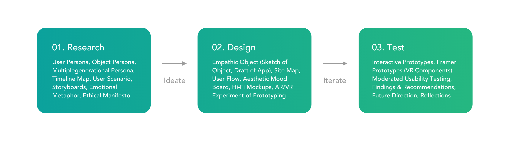BACKGROUND
People want Eco-Friendliness more than ever
According to a report from the GlobalWebIndex (GWI), an audience-targeting company provides consumer data for marketing needs. The data visulization below indicates that consumers care deeply about the environment. Around the world, 46% of consumers say helping the environment is important to them, and the same amount wants companies they buy from to be eco-friendly.
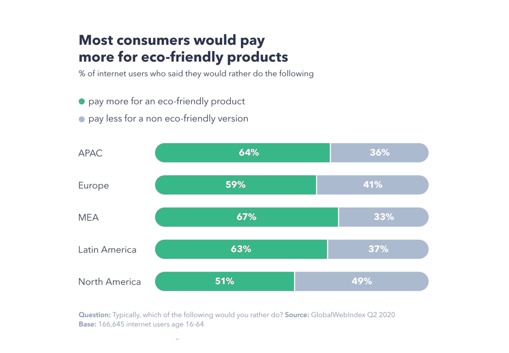Why do we decide to make Greenergy?
When it comes to emotions, making impacts that people think would do good. Through our product, we hope our users feel positive emotions: joy, peace, recognized, and calm. The mission of Greenergy is to provide users a service that...
- Help to make the world a better place!
- Help to make people feel better in their quick-paced, busy modern life
With Greenergy , users would...
- Start to reduce electricity wastage every day
- Let Greenergy manage your electricity usage automatically
- Enjoy the accomplishment you made throughout the journey
- Enjoy your secret garden alone or with your friends!
Concept Validation: Future Wheel
We made a future wheel or timeline of believable but mostly fictional events that lead to a possible future:
- The center circle in dark green circles: Users' Greenergy
- The second layer in green circles: What might happen when users started to interact with their plants
- The third layer in light green circles: How might the Greenergy help your life and impact the future
Design Pitch
Before we ideated our product, we brainstormed about the concept and the vision. And Narrow down the scope and the idea as below:
- The problem: why we need the product for our prospective home
- To discover our opportunity, we aimed our target users, who might use the product
- The solution: what our product does and how it works
- The business model, marketing strategy, and the competition
RESEARCH
Multigenerational Personas
We create a mulitgenerational personas regarding our object persona and the user persona. The goal is to end up with some people that would be living in 2035.
Object Persona: about Our Smart Home System...
Garden, Forest, and Desert
We would provide three types of indoor plants for their home. Users can choose Greenergy to fit their needs and interests. Each plant has its unique and different characteristics. Such as the type of lighting needed, amount of water required, and the air purification level.
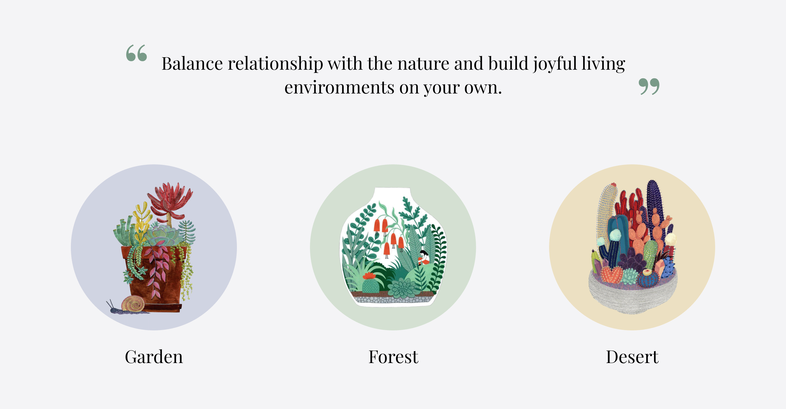Analysis Index
The purpose of the analysis is through the observation of the product. We observed Greenergy with multiple characters, such as their physical appearance, expressive response, temperament & mood, and perception. And each group breaks down into the following description.
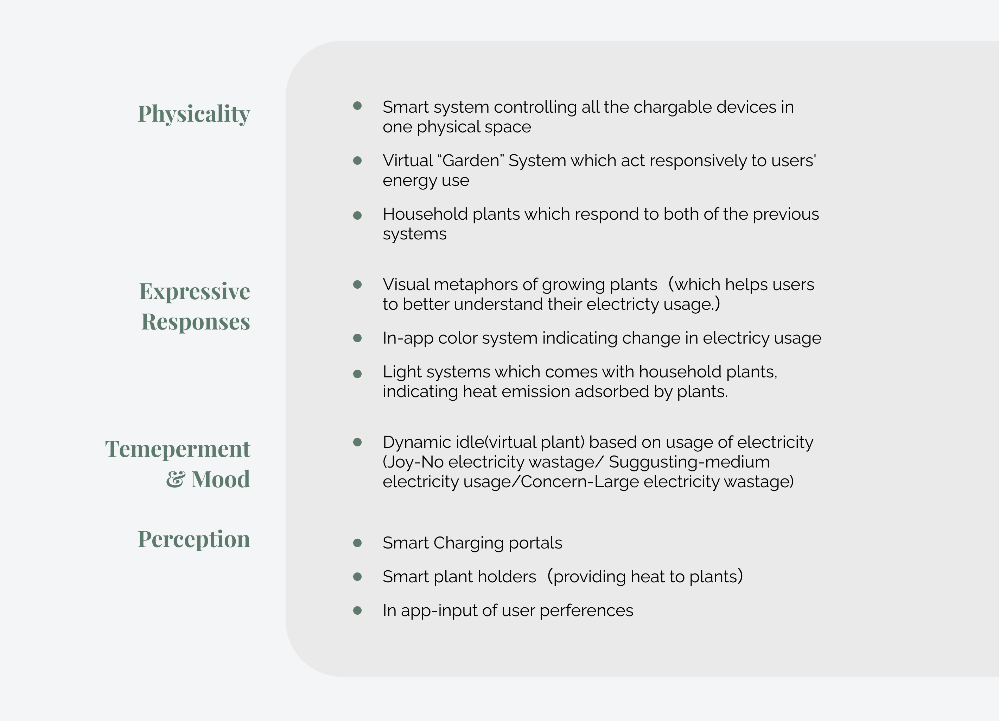User Persona: Let's Meet Fiona...
32 years old, Data Scientist
We created a fictional person that represents a user who is our target audience. The figure below illustrates the pictures: what Fiona does to interact with the Greenergy product and how she feels. Also, we tried to describe her senses' reaction and what she might think from her perspective.
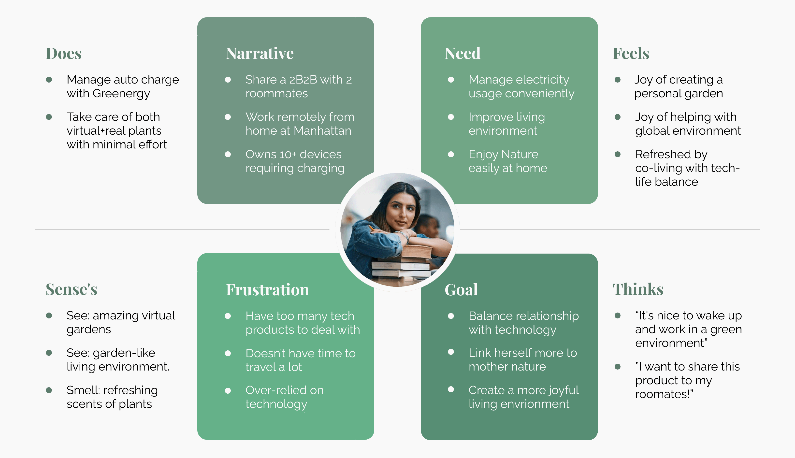Timeline Map about Fiona & Her Friends...
Based on our user persona, we created networking and a timeline for Fiona. In this process, we could draw down the opportunities of the product for her family or friends. To image how her relationship and friends interact with her. Also, how her community could participate in Greenergy. In this timeline, we also need to consider how people change their lifestyles after the global pandemic. For example:
- What can Greenergy do to improve the life quality when people spending a long-time indoors?
- How can Greenergy help people cheer up their positive emotions to overcome anxieties of losing connection?
User Scenario & Storyboards
The storyboards help us to envision how the users interact with our product and service.
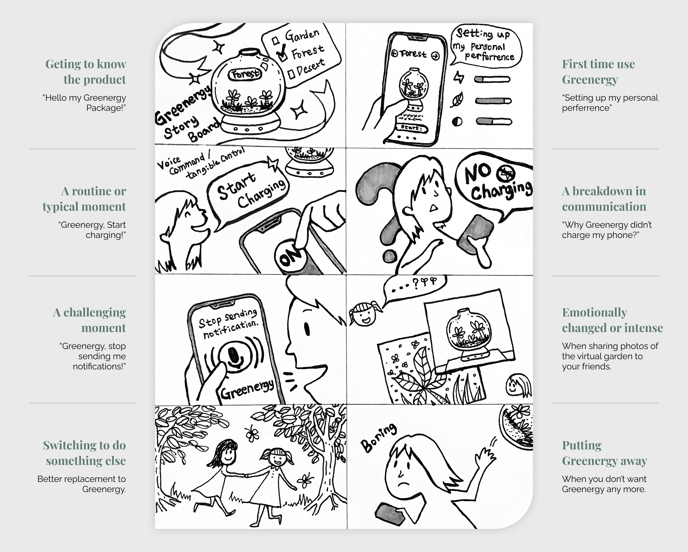Emotional Metaphor
We expect our users would see Greenergy as...
- Your friend: Greenergy can provide valuable companionship
- Your pet: Greenergy can reduce stress, anxiety, and depression, ease loneliness
- Your coach: Greenergy can guide users to stay calm and keep mental health

Emotional Journey Map
The area chart shows the alteration of Fiona's emotions changing. And the actions she takes after receiving Greenergy. Based on the user scenario and storyboards, we discover opportunities that Greenergy can help or provide service for users in each phase of journeys.
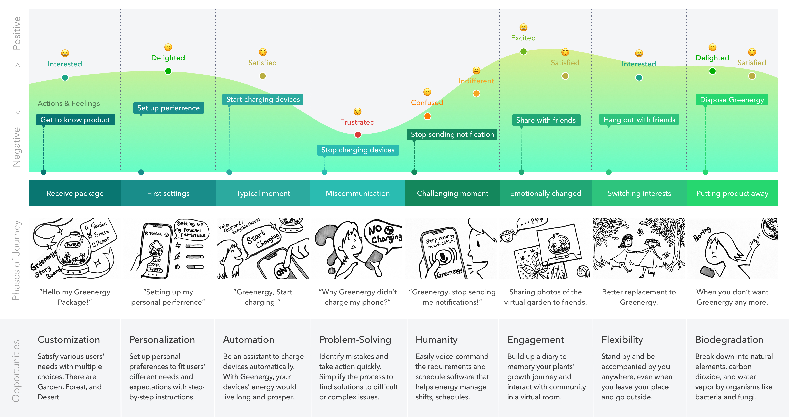Ethical Manifesto
We value our users' right and their self-care when they use our products. Greenergy's ethical manifesto shows our beliefs, authentic behavior, and the power of our core ideas.
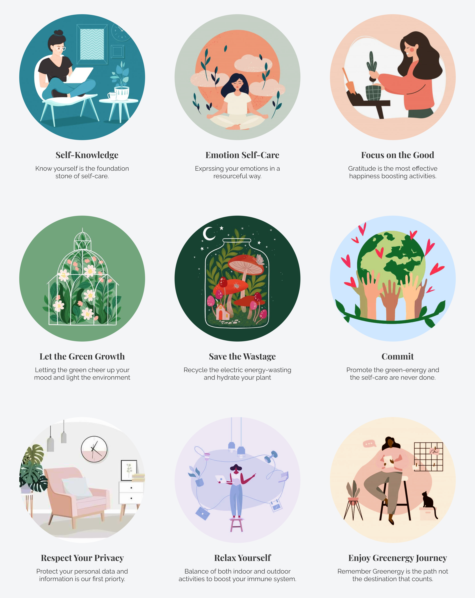Tone & Manner Principles
I followed the methods I learned from a workshop, Material's communication principles: Intro to UX Writing, held by Alex Hays from Google I/O. In this matric graphic, I categorized the tone and manner principles of Greeenergy into 2 axes: Fun versus Serious and Concise versus Detailed. And I plotted each message type on my map with respect to both axes to create the tone map below.
Why make this Voice Map?
The guidelines can help product designers to align on a model with a comprehensive voice. All messages should be proactive and make sense of the design decisions to match our brand.
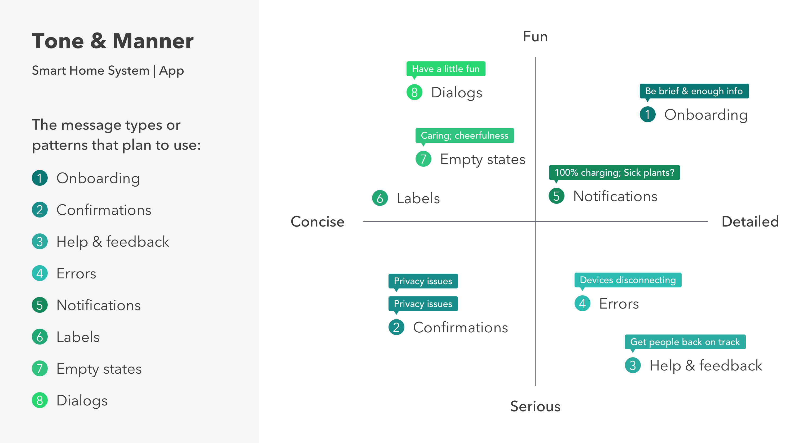IDEATION
How does Greenergy look like?
Then, we drew down the initial idea about Greenergy. We also created low-fidelity mockups for the critical feature page.

Presentation in Mozilla Hubs
Since all our classes were online during the 2021 pandemic, we came out with the idea that present our initial product idea in a virtual room, Mozzila Hubs. I decided to place my design in an aquarium that has the looping bubble animation.

Site Map of Greenergy App
And we used this site map to envision the main features of our Greeneygy app.
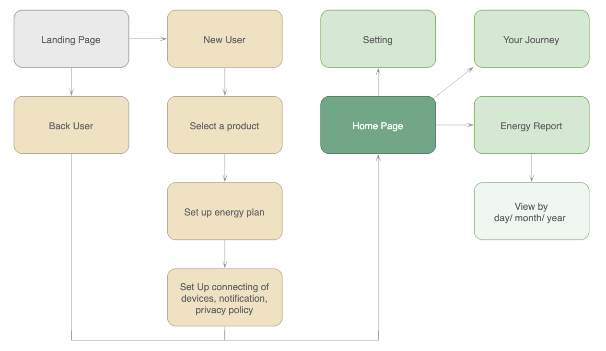How Do Users Walk through Greenergy App?
User Flow for New Users
Assist our user in how to register the products, connecting their devices, and customizing their needs step by step.
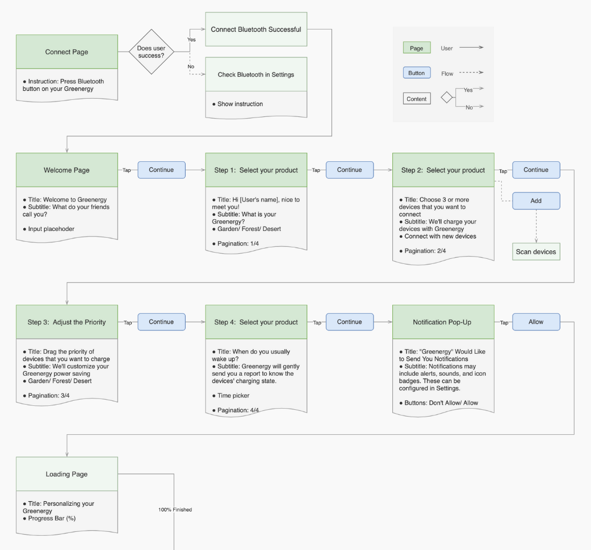User Flow for Real & Virtual Combined Environments
Provide an extended reality (XR) technology. Users go through MR, AR, and VR for immersed experiences.
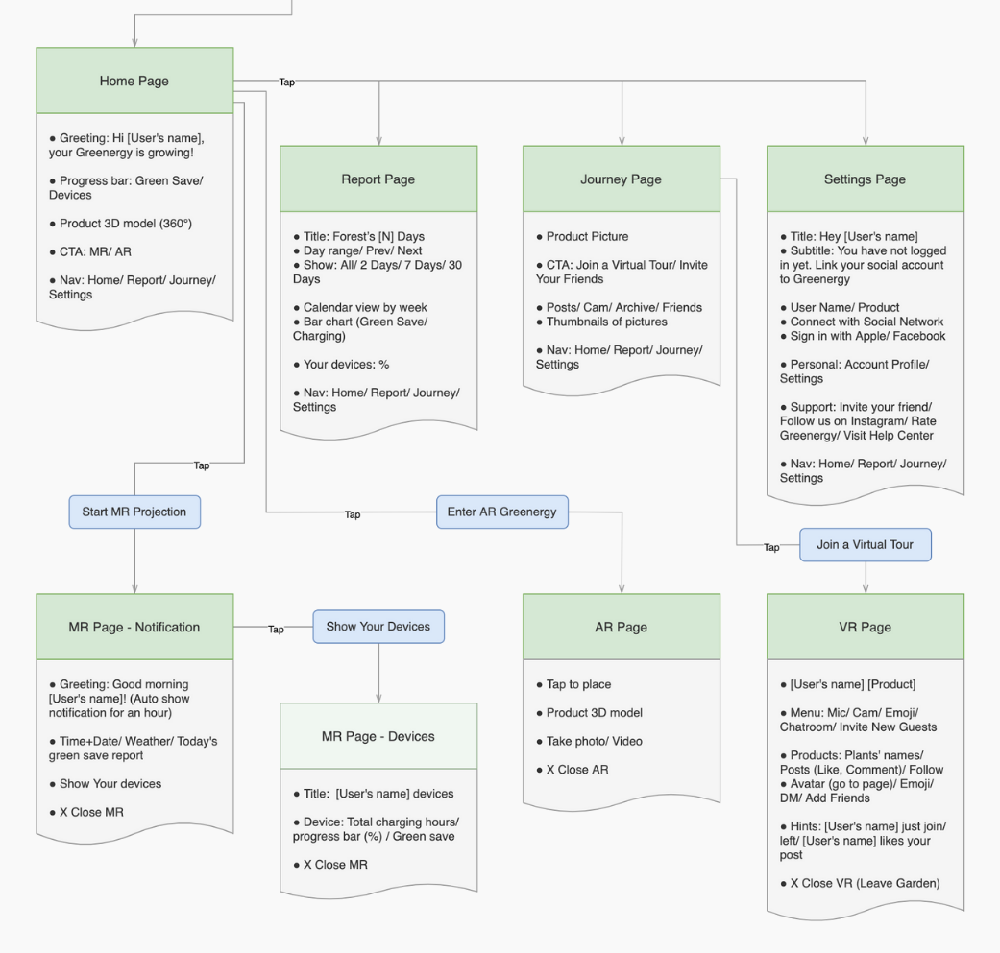Aesthetic Mood Board
I researched the visual samples and categorize the images by the features below:
- Plants App: how to pick a color palette for green
- Sign-Up Flow: how to guide users to set up the app with an appealing instruction
- Report Page: how to design information visualization and charts
- Journey Page: how to present image background and group each section
Experiments of Prototyping
In a speculative design project, we emphasize how to convey the concept entirely. Because of the limited time, I decided to make a prototyping video for our final presentation first within two days. Then, plan to create interactive prototyping in the future.
How do I design a model for augmented reality (AR)?
Step 1: 3D Modeling
I plan to cohesive the interactive prototype. So I picked up an online 3D software, Vectary 3D, which can drag and drop the OBJ files and copy the embedding code into Figma after.
After researching their open-source library and Sketchfab, I decided to create the glass ball and the wood base from scratch for the better-delicately model. I started with geometry shapes and changed their Z depth. And altered the textures and materials of the Greenergy and created lights and a camera to render the final result.
The tool I've used and tested:

Step 2: Spark AR Studio
To promote the project with a higher exposure rate for users since Instagram has numerous users. I decided to test Spark AR Studio, an AR platform to create AR effects for mobile cameras.
I exported the Obj file from Vectary 3D and import it into Spark AR Studio with World Template and test the model in Instagram Story. However, the model cannot render with transparent glass.
The tool I've used and tested:

Step 3: Vectary AR
Then, I tested it again in Vectary 3D. Although the AR effect cannot upload to public social media such as Instagram or Facebook for their users, the model rendered a better result than before. I decided to use this model for my final prototyping video.
The tool I've used and tested:

How do I make a virtual reality (VR) prototype?
Step 1: Create 360° Images
I experimented with the 360 drawings in Photoshop. The grid provides 4 sides plus top and bottom stretched in 2:1 equirectangular projection.
Then, I created a symmetrical background and added the 3 Greenergy products and the green door as an entry to the virtual room.
The tool I've used and tested:

Step 2: Panorama Viewer
To make a 360 video, I upload the 360 drawing files to Panorama Viewer, a small and very flexible viewer for panoramic images and interactive virtual view.
I used QuickTime Player to record the screen. I interacted and rotated the window of Panorama Viewer to simulate how users will see when they enter this virtual garden.
The tool I've used and tested:

Step 3: Add UI Elements
I designed the user interfaces and made prototypes in InVision. To record the video and showed how users interact with the virtual garden.
Finally, I made a video editing to combine two prototypes of videos from panorama and InVision. And add the music that has bird and water sounds from a forest to make users have a better immerse experience.
Music Credits: Bluebird Story by DJ Okawari, Jumelles
The tool I've used and tested:

MOCKUPS & PROTOTYPES
Introduction of Our Products...
We provided 3 products: Forest, Desert, and Garden, to satisfy various users' needs with multiple choices.
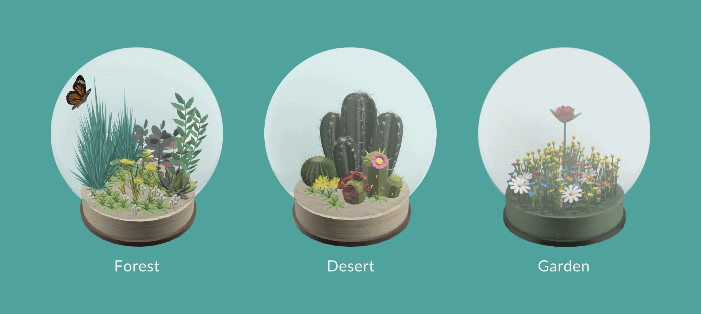Vectary 3D Models of Forest, Desert, & Garden
I also publish the models to the website that manipulate and place photorealistic 3D objects of Greenergy to bring customizable and interactive 3D elements and mockups into my design process.
Forest
To design the Forest, I picked up plants with different heights to mimic the various altitudes. I named the product because of its wider-ranging plants and diversity, like a rainforest.
Desert
The Desert has cactus, succulents, and types of small shrubs which can survive with minimal water. The desert biome is characterized by sandy or stony soil and little moisture.
Garden
The Garden named as its floral plants. The flowers are grown, displayed, and bloom at varying times of the year. The Garden is the most difficult one of three products to take care of but it adds aroma to your space.
Fiona Walks through Greenergy App...
After creating all UI elements and 3d models, I jumped into Sketch and designed the mockups and prototypes. I would break down and explain the features of each screen below.

First, Landing Page shows up...
Fiona downloads the app and opens it to connect to her devices. Here are 2 scenarios: one is she connects to devices successfully. The call-to-action button shows a green tick. But when the connection fails, the instruction pop-up shows the steps to guide the user to solve the problem. And provide another help to contact customer care.
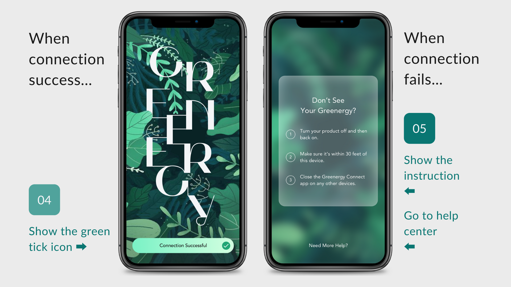Then, go Set-Up Page to make Personalization
In this task flow, Fiona selects her product and connects the app to her devices. After pairing the device, she makes the priority of them. When she could not find her devices, she taps the add new device button.
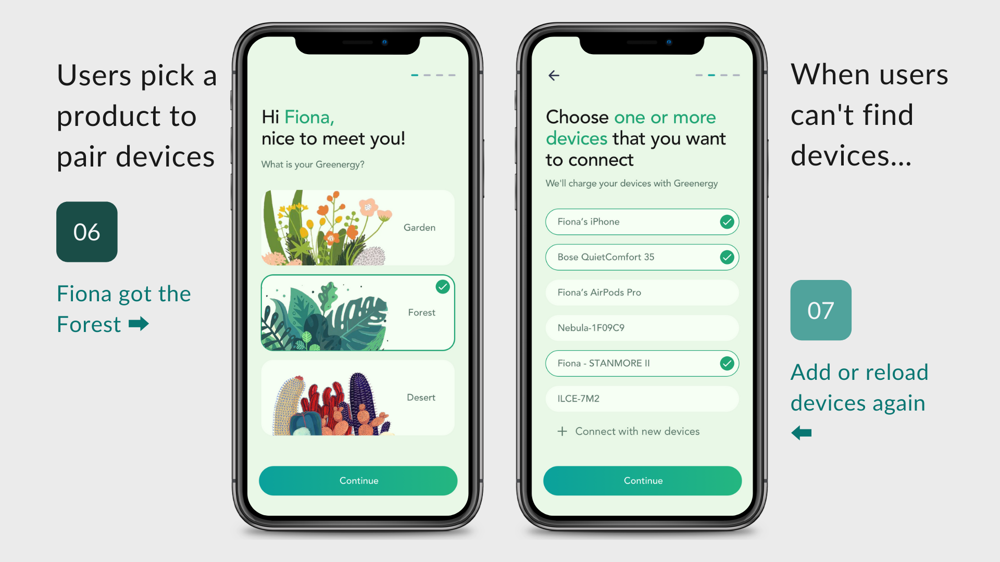Finally, choose her Wake-Up Time to get a reminder from Greenergy
At the last step, she picks a time for MR Projection which Greenergy will gently send users a report to know their green saving and the devices' charging state.
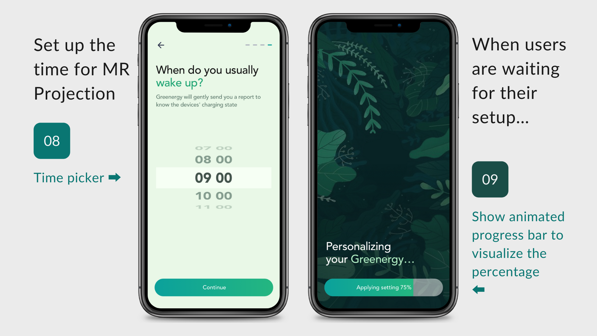Fiona wants to see Energy Usage Report...
She goes to the Home Page and taps on the button to start MR Projection. The report and devices' charging state would show up in your environment. In this task flow, Greenergy provides a seamless experience that users interact with the services in the real world.

And she tracks Greenergy on Home Page & Report Page...
When the plant of Greenergy grows up, the 3D model changes at the same time. And Fiona can follow up data and devices on the Report Page. To know the report this week, she switches to the 7 days button. The system reloads the new chart.
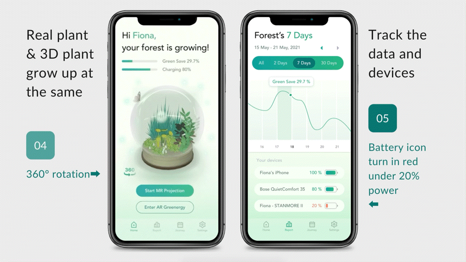MR Projection, a smart way to learn your energy cost
When the plant of Greenergy grows up, the 3D model changes at the same time. And Fiona can follow up data and devices on the Report Page. To know the report this week, she switches to the 7 days button. The system reloads the new chart.
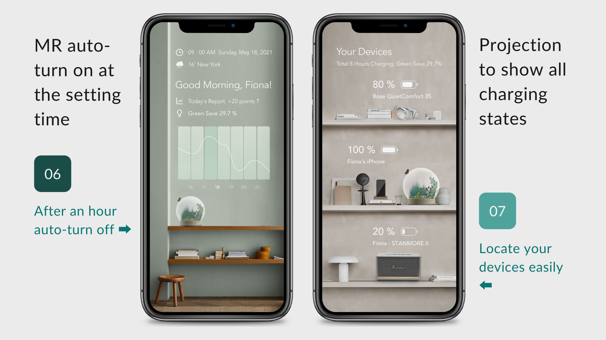See Greenergy as a pet by AR Mode...
When Fiona is not at home, she can use the augmented reality (AR) to show her Greenergy over a real-world environment. Greenergy AR mode makes it is possible to interact with your indoor plants superimposed on the world via a smartphone screen.

Create your Greenergy memories on Journey Page...
Fiona wants to share Greenergy with her friends, she posts the photos of Greenergy on the Journey page. She can follow her friends' Greenergy and discuss the experience of how to take care of the indoor plant.
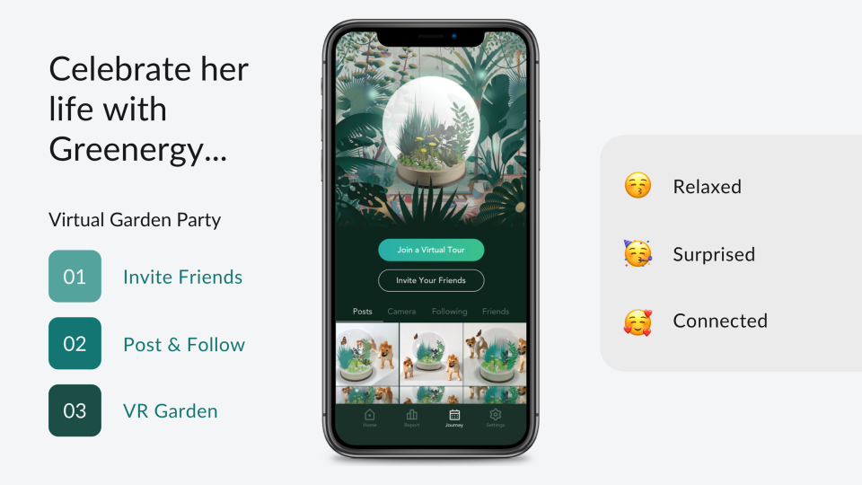Welcome to Fiona's Virtual Reality Garden...
On Saturday night, she plans to hold a party and invites her friend to her virtual garden. The video below is the prototype to show how the VR garden looks like.
Greenergy Garden... a new way to connect people and "nature"
This garden is a place where users could concentrate alone or connect to people and "nature" even they stay indoors. After Fiona and her friends enter the VR Garden, she gets notifications when new participants join her virtual garden.
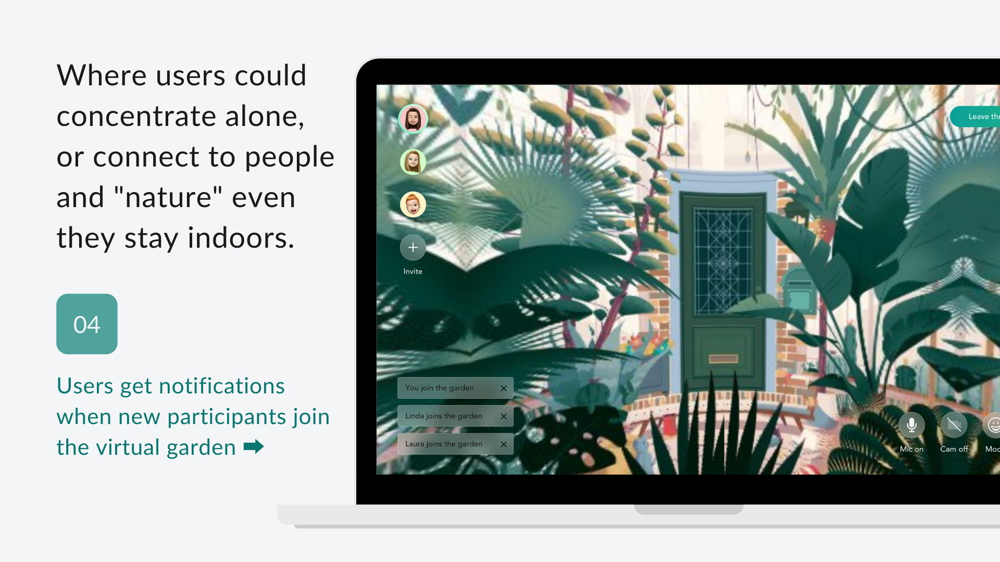How Fiona shows her Face Expression in an online party
When Fiona meets her friends in the VR garden, she wants to show her love and celebration to people. She hovers the mood button and selects one from 8 default emojis.
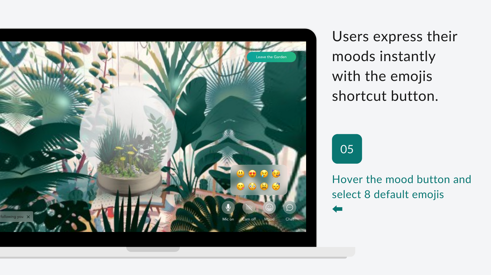To follow up her friend's User Profile & Posts
Fiona hovers the avatar to add Laura to her friends. And she takes a look at Laura's profile and posts. Fiona thinks Laura's posts are so impressive and wants to follow her Greenergy.
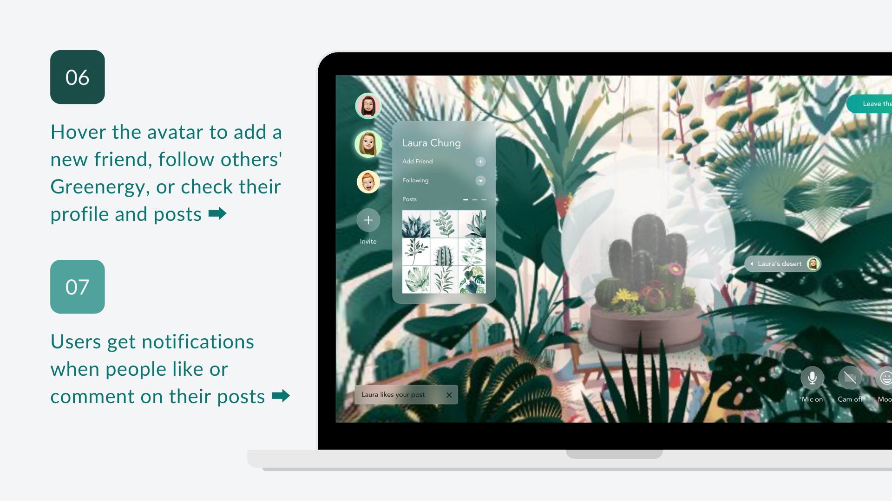Start a conversation with friends
Fiona talks with her friends in the chat room and discusses how to take care of their Greenergy.
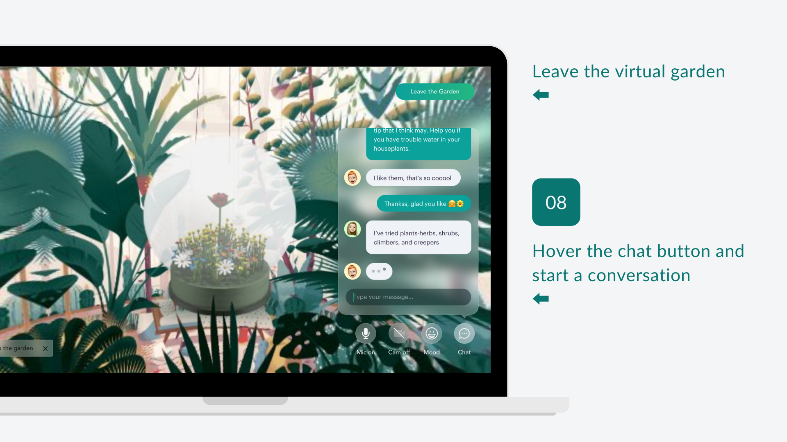WEBSITE DESIGN
Learn more information on Greenergy Website...
On Greenergy's website, Fiona plans to start a free trial, and download the app.
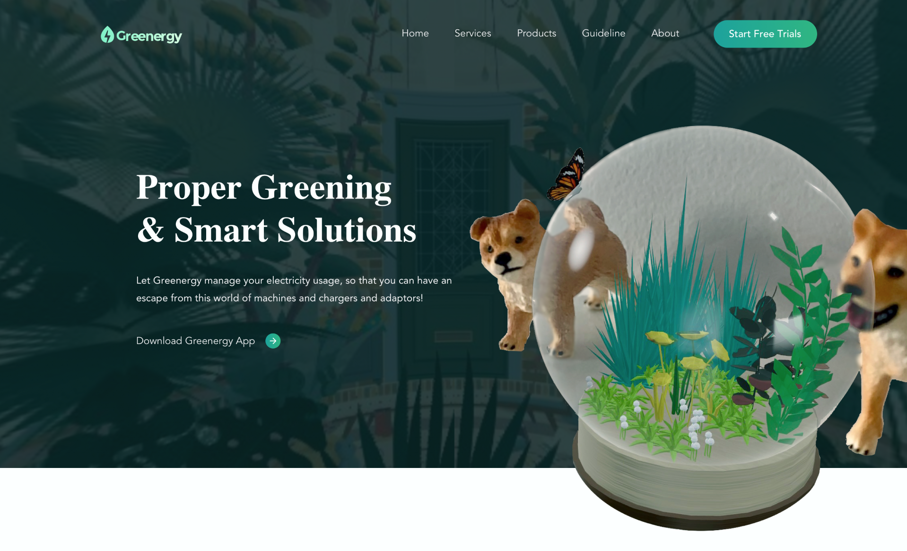The introduction of Greenergy App...
Fiona gets to know more about Greenergy App's features and its services.
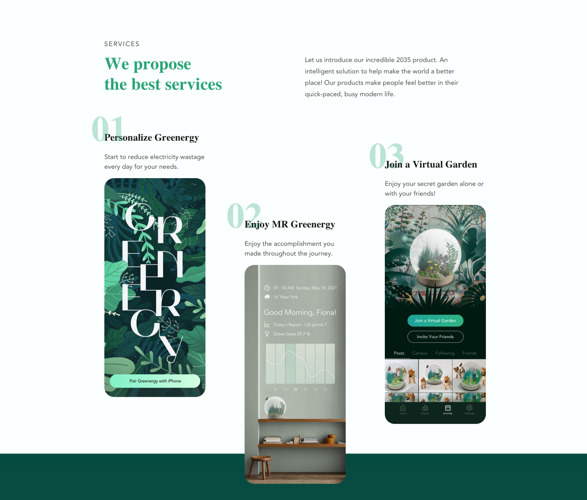The various Greenergy Products...
Fiona learns the difference between each plant in this section. She knows the "Forest" which she got is a plant that does not need too much light. And it is midden light needed which ranks as 3. Also, the plant has the best air purification level, which ranks as 5.

Know more about Low-Maintenence Plants
The Greenergy website also provides knowledge and guidelines about the common indoor plants, which are easy to take care of in your residence.

The benefits to keep House Plants
The data visualization of how indoor plants can help people to reduce ailments and increase productivity.
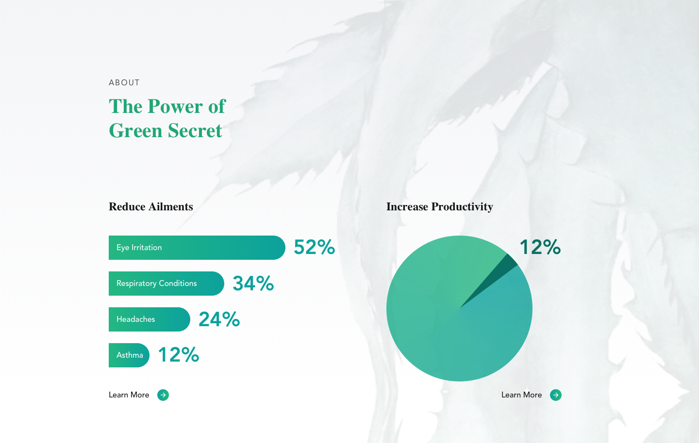Know More Benefits
In this section, Fiona learns more number about what is good to keep house plants.
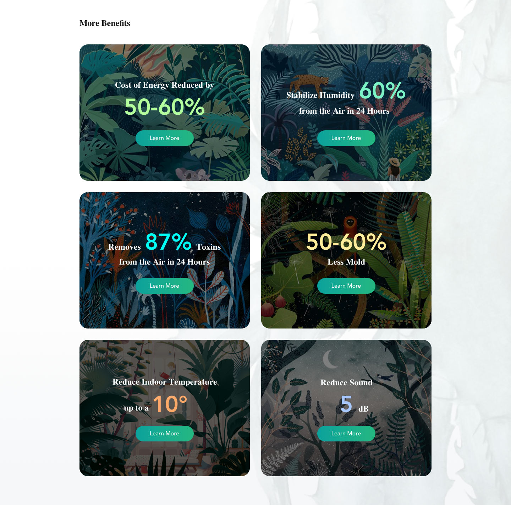Start Virtual Garden right now!
The Greenergy website also provides an entry to the virtual garden for users who want to participate in the VR party on their desktop.
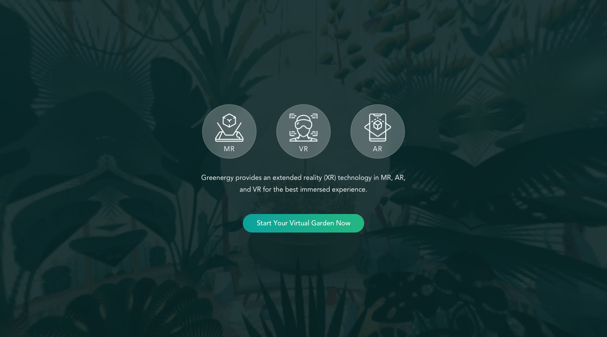FINAL PRESENTATION
I uploaded the mockups of Greenergy App and Website on the InVision, and created interactive user flows for the features. Click the buttons below to see the prototypes and the final presentation slides.
PROTOTYPES WEBSITE VIEW SLIDES
REMARKS
Future Direction
What will/could be the next steps in the project:
- Do Generative Research and interview to collect attitudinal data, users’ opinions about this product.
- Create interactive prototypes to conduct usability testing on users. To get feedback and iterate products.
Follow the brief of plan as below:
- Code out interactive VR prototypes in Framer.js.
- Conduct moderated usability testing.
- Iterate the products after getting feedbacks.
Reflections
During this project, the most challenging part is to make XR (AR/VR/MR) user interface. It's a new area that I need to consider about other senses like sounds and voice commend. Also, how users interact with user interfaces when in 360 environments. The different perspective than tangible screen makes users might distract or cannot find out what they need. How to guide users to quickly explore the VR space could be a top priority a designer need to address first.